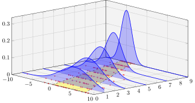

PGFPlots gallery
Gallery to show off different features of PGFPlots and how they can be used from PGFPlotsX.jl.
Cost Error
@pgf Axis(
{
xlabel = "Cost",
ylabel = "Error",
},
Plot(
{
color = "red",
mark = "x"
},
Coordinates(
[
(2, -2.8559703),
(3, -3.5301677),
(4, -4.3050655),
(5, -5.1413136),
(6, -6.0322865),
(7, -6.9675052),
(8, -7.9377747),
]
),
),
)
Simple Expression
using LaTeXStrings
@pgf Axis(
{
xlabel = L"x",
ylabel = L"f(x) = x^2 - x + 4"
},
Plot(
Expression("x^2 - x + 4")
)
)
Mixing expression and coordinates
@pgf Axis(
{
height = "9cm",
width = "9cm",
grid = "major",
},
PlotInc(Expression("-x^5 - 242")),
LegendEntry("model"),
PlotInc(Coordinates(
[
(-4.77778,2027.60977),
(-3.55556,347.84069),
(-2.33333,22.58953),
(-1.11111,-493.50066),
(0.11111,46.66082),
(1.33333,-205.56286),
(2.55556,-341.40638),
(3.77778,-1169.24780),
(5.00000,-3269.56775),
]
)),
LegendEntry("estimate")
)
Log logLog
@pgf LogLogAxis(
{
xlabel = "Cost",
ylabel = "Gain"
},
Plot(
{
color = "red",
mark = "x"
},
Coordinates(
[
(10, 100),
(20, 150),
(40, 225),
(80, 340),
(160, 510),
(320, 765),
(640, 1150),
]
)
)
)
Yaxis log
@pgf Axis(
{
xlabel = "Cost",
ylabel = "Gain",
ymode = "log",
},
Plot(
{
color = "blue",
mark = "*"
},
Coordinates(
[
(1, 8)
(2, 16)
(3, 32)
(4, 64)
(5, 128)
(6, 256)
(7, 512)
]
)
)
)
Dof vs error
using LaTeXStrings
@pgf Axis(
{
xlabel = "Degrees of freedom",
ylabel = L"$L_2$ Error",
xmode = "log",
ymode = "log",
},
Plot(Coordinates(
[( 5, 8.312e-02), ( 17, 2.547e-02), ( 49, 7.407e-03),
( 129, 2.102e-03), ( 321, 5.874e-04), ( 769, 1.623e-04),
(1793, 4.442e-05), (4097, 1.207e-05), (9217, 3.261e-06),]
)),
Plot(Coordinates(
[( 7, 8.472e-02), ( 31, 3.044e-02), (111, 1.022e-02),
( 351, 3.303e-03), ( 1023, 1.039e-03), (2815, 3.196e-04),
(7423, 9.658e-05), (18943, 2.873e-05), (47103, 8.437e-06),]
)),
Plot(Coordinates(
[( 9, 7.881e-02), ( 49, 3.243e-02), ( 209, 1.232e-02),
( 769, 4.454e-03), ( 2561, 1.551e-03), ( 7937, 5.236e-04),
(23297, 1.723e-04), (65537, 5.545e-05), (178177, 1.751e-05),]
)),
Plot(Coordinates(
[( 11, 6.887e-02), ( 71, 3.177e-02), ( 351, 1.341e-02),
( 1471, 5.334e-03), ( 5503, 2.027e-03), ( 18943, 7.415e-04),
(61183, 2.628e-04), (187903, 9.063e-05), (553983, 3.053e-05),]
)),
Plot(Coordinates(
[( 13, 5.755e-02), ( 97, 2.925e-02), ( 545, 1.351e-02),
( 2561, 5.842e-03), ( 10625, 2.397e-03), ( 40193, 9.414e-04),
(141569, 3.564e-04), (471041, 1.308e-04), (1496065, 4.670e-05),]
))
)
Scatter classes
@pgf Axis(
{
"scatter/classes" = {
a = {mark = "square*", "blue"},
b = {mark = "triangle*", "red"},
c = {mark = "o", draw = "black"},
}
},
Plot(
{
scatter,
"only marks",
"scatter src" = "explicit symbolic",
},
Table(
{
meta = "label"
},
x = [0.1, 0.45, 0.02, 0.06, 0.9 , 0.5 , 0.85, 0.12, 0.73, 0.53, 0.76, 0.55],
y = [0.15, 0.27, 0.17, 0.1, 0.5, 0.3, 0.52, 0.05, 0.45, 0.25, 0.5, 0.32],
label = ["a", "c", "a", "a", "b", "c", "b", "a", "b", "c", "b", "c"],
)
)
)
Splines
@pgf Axis(
{
"nodes near coords" = raw"(\coordindex)",
title = raw"\texttt{patch type=quadratic spline}",
},
Plot(
{
mark = "*",
patch,
mesh, # without mesh, pgfplots tries to fill,
# "patch type" = "quadratic spline", <- Should work??
},
Coordinates(
[
# left, right, middle-> first segment
(0, 0), (1, 1), (0.5, 0.5^2),
# left, right, middle-> second segment
(1.2, 1), (2.2, 1), (1.7, 2),
]
)
)
)
Mesh scatter
@pgf Plot3(
{
mesh,
scatter,
samples = 10,
domain = "0:1"
},
Expression("x * (1-x) * y * (1-y)")
)
Group plot
# this is an imitation of the figure in the manual, as we generate the data
x = range(0; stop = 10, length = 100)
@pgf plot = Plot({very_thick}, Table(x = x, y = @. (sin(x * 8) + 1) * 4 * x))
@pgf GroupPlot(
{
group_style =
{
group_size="2 by 2",
horizontal_sep="0pt",
vertical_sep="0pt",
xticklabels_at="edge bottom"
},
xmin = 0,
ymin = 0,
height = "3.7cm",
width = "4cm",
no_markers
},
nothing,
{xmin=5, xmax=10, ymin=50, ymax=100},
plot,
{xmax=5, ymax=50},
plot,
{xmin=5, xmax=10, ymax=50, yticklabels={}},
plot
)
Patch
@pgf Axis(Plot(
{
patch,
"table/row sep" = "\\\\",
patch_table = TableData([0 1 2;
1 2 3;
4 3 5])
},
Table(
{
point_meta = raw"\thisrow{c}"
},
:x => [0, 1, 2, 3, 2, 4],
:y => [0, 1, 0, 1, 0, 0],
:c => [0.2, 0, 1, 0, 0.5, 0.5])))
3D Waterfall
using Random
using Distributions
Random.seed!(42)
#Generate Data
x_min = -10 # xrange to plot
x_max = 10
μ_min = -5
μ_max = 5
dist = (μ, σ) -> Normal(μ, σ)
# make the set of distributions we're going to plot:
dists = [dist(-6+i, 1+0.3*i) for i in 1:10]
# creates random scatter points:
rnd = rand.(Truncated.(dists, x_min, x_max), 20)
# get the pdf of the dists:
dat_pdf = [(x) -> pdf.(d, x) for d in dists]
# point density for pdfs
x_pnts = collect(x_min:0.05:x_max)
# add redundant points at the ends, for nicer fill:
x_pnts_ext = [[x_pnts[1]]; x_pnts; [x_pnts[end]]]
# define the Axis to which we will push! the contents of the plot
axis = @pgf Axis(
{
width = raw"1\textwidth",
height = raw"0.6\textwidth",
grid = "both",
xmax = x_max,
xmin = x_min,
zmin = 0,
"axis background/.style" = { fill = "gray!10" }, # add some beauty
# this is needed to make the scatter points appear behind the graphs:
set_layers,
view = "{49}{25}", # viewpoint
ytick = collect(0:9),
ztick = collect(0:0.1:1)
},
)
# draw a yellow area at the bottom of the plot, centered at μ and 2σ wide.
@pgf area = Plot3(
{
no_marks,
style ="{dashed}",
color = "black",
fill = "yellow!60",
fill_opacity = 0.65,
# so we can see the grid lines through the colored area:
on_layer = "axis background"
},
Table(x = [dists[1 ].μ - dists[1 ].σ, dists[end].μ - dists[end].σ,
dists[end].μ + dists[end].σ, dists[1 ].μ + dists[1 ].σ],
y = [length(rnd) - 1, 0, 0, length(rnd) - 1],
z = [0, 0, 0, 0]
),
raw"\closedcycle"
)
push!(axis, area)
# add the slices as individual plots to the common axis
@pgf for i in eachindex(dists)
scatter = Plot3(
{
only_marks,
color = "red!80",
mark_options = {scale=0.4},
# set the markers on the same layer as the plot:
mark_layer = "like plot",
on_layer = "axis background"
},
Table(x = rnd[i],
y = (length(dists) - i) * ones(length(rnd[i])),
z = zeros(length(rnd[i])))
)
push!(axis, scatter)
# add a pdf-curve on top of each second data set
if i%2 == 1
curve = Plot3(
{
no_marks,
style = {thick},
color = "blue"
},
Table(x = x_pnts,
y = (length(dists) - i) * ones(length(x_pnts)),
z = dat_pdf[i](x_pnts))
)
# The fill is drawn seperately to handle the the end of the curves nicely.
# This is an alternative to "\fillbetween"
fill = Plot3(
{
draw = "none",
fill = "blue",
fill_opacity = 0.25
},
Table(x = x_pnts_ext,
y = (length(dists) - i) * ones(length(x_pnts_ext)),
z = [[0]; dat_pdf[i](x_pnts); [0]])
)
push!(axis, curve, fill)
end
end
Parametric 3D curve
This nice parametric curve was adapted from a TeXWelt answer. We calculate the curve in Julia using broadcasting, and use the colors from the Julia logo.
p1 = range(0, 360; length = 100)' # parameter 1
p2 = range(0, 360; length = 70) # parameter 2
w1 = @. sind(3*(p1 + 2 * p2)) + 1.25 # wave 1
w2 = @. 6 + w1 * cosd(p1) # wave 2
x = vec(@. w2 * cosd(p2))
y = vec(@. w2 * sind(p2))
z = vec(@. w1 * sind(p1))
logo_colors = [(77,100,174), (57,151,79), (255,255,255), (146,89,163), (202,60,50)]
@pgf Axis(
{
axis_equal,
axis_lines = "none"
},
Plot3(
{
surf,
z_buffer = "sort",
colormap = "{Julia}{$(join(map(c -> "rgb255=$c", logo_colors), ", "))}",
"mesh/rows" = length(p1)
},
Table(x, y, z)))